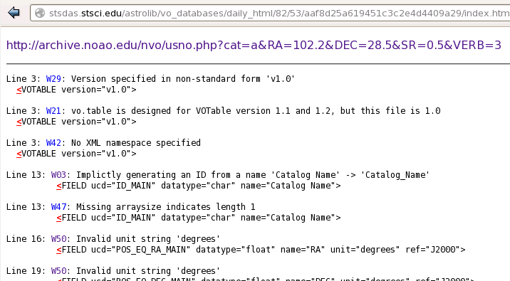
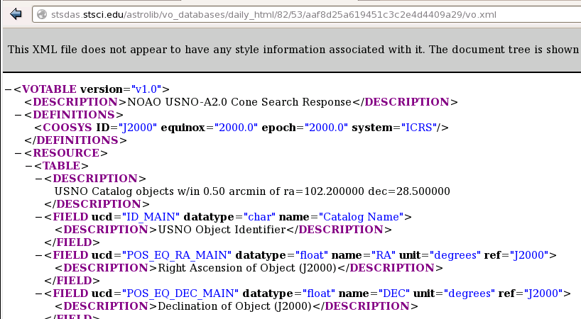

Using astropy.vo.validator¶
VO services validator is used by STScI to support Simple Cone Search. Currently, only Cone Search services are supported. A typical user should not need the validator. However, this could be used by VO service providers to validate their services. Currently, any service to be validated has to be registered in STScI VAO Registry.
Validation for Simple Cone Search¶
astropy.vo.validator.validate validates VO services.
Currently, only Cone Search validation is done using
check_conesearch_sites(),
which utilizes underlying astropy.io.votable.validator library.
A master list of all available Cone Search services is obtained from
astropy.vo.validator.Conf.conesearch_master_list, which is a URL
query to STScI VAO Registry by default. However, by default, only the
ones in astropy.vo.validator.Conf.conesearch_urls are validated
(also see Default Cone Search Services), while the rest are
skipped. There are also options to validate a user-defined list of
services or all of them.
All Cone Search queries are done using RA, DEC, and SR given by
<testQuery> XML tag in the registry, and maximum verbosity.
In an uncommon case where <testQuery> is not defined for a service,
it uses a default search for RA=0&DEC=0&SR=0.1.
The results are separated into 4 groups below. Each group
is stored as a JSON file of VOSDatabase:
conesearch_good.jsonPassed validation without criticalwarnings and exceptions. This database residing in
astropy.vo.Conf.vos_baseurlis the one used by Simple Cone Search by default.
conesearch_warn.jsonHas critical warnings but noexceptions. Users can manually set
astropy.vo.Conf.conesearch_dbnameto use this at their own risk.
conesearch_exception.jsonHas some exceptions. Never use this. For informational purpose only.
conesearch_error.jsonHas network connection error. Never use this. For informational purpose only.
HTML pages summarizing the validation results are stored in
'results' sub-directory, which also contains downloaded XML
files from individual Cone Search queries.
Warnings and Exceptions¶
A subset of astropy.io.votable.exceptions that is considered
non-critical is defined by
astropy.vo.validator.Conf.noncritical_warnings, which will not be
flagged as bad by the validator. However, this does not change the
behavior of astropy.io.votable.Conf.pedantic, which still needs to
be set to False for them not to be thrown out by
conesearch(). Despite being
listed as non-critical, user is responsible to check whether the
results are reliable; They should not be used blindly.
Some units recognized by VizieR
are considered invalid by Cone Search standards. As a result,
they will give the warning 'W50', which is non-critical by default.
User can also modify astropy.vo.validator.Conf.noncritical_warnings
to include or exclude any warnings or exceptions, as desired.
However, this should be done with caution. Adding exceptions to
non-critical list is not recommended.
Building the Database from Registry¶
Each Cone Search service is a VOSCatalog in
a VOSDatabase (see
Catalog Manipulation and Database Manipulation).
In the master registry, there are duplicate catalog titles with different access URLs, duplicate access URLs with different titles, duplicate catalogs with slightly different descriptions, etc.
A Cone Search service is really defined by its access URL
regardless of title, description, etc. By default,
from_registry() ensures
each access URL is unique across the database.
However, for user-friendly catalog listing, its title will be
the catalog key, not the access URL.
In the case of two different access URLs sharing the same title, each URL will have its own database entry, with a sequence number appended to their titles (e.g., ‘Title 1’ and ‘Title 2’). For consistency, even if the title does not repeat, it will still be renamed to ‘Title 1’.
In the case of the same access URL appearing multiple times in
the registry, the validator will store the first catalog with
that access URL and throw out the rest. However, it will keep
count of the number of duplicates thrown out in the
'duplicatesIgnored' dictionary key of the catalog kept in the
database.
All the existing catalog tags will be copied over as dictionary
keys, except 'accessURL' that is renamed to 'url' for simplicity.
In addition, new keys from validation are added:
validate_expectedExpected validation result category, e.g., “good”.
validate_network_errorIndication for connection error.
validate_nexceptionsNumber of exceptions found.
validate_nwarningsNumber of warnings found.
validate_out_db_nameCone Search database name this entry belongs to.
validate_versionVersion of validation software.
validate_warning_typesList of warning codes.
validate_warningsDescriptions of the warnings.
validate_xmllintIndication of whether
xmllintpassed.
validate_xmllint_contentOutput from
xmllint.
Configurable Items¶
These parameters are set via Configuration system (astropy.config):
astropy.vo.validator.Conf.conesearch_master_listVO registry query URL that should return a VO table with all the desired VO services.
astropy.vo.validator.Conf.conesearch_urlsSubset of Cone Search access URLs to validate.
astropy.vo.validator.Conf.noncritical_warningsList of VO table parser warning codes that are considered non-critical.
Also depends on properties in Simple Cone Search Configurable Items.
Examples¶
>>> from astropy.vo.validator import validate
Validate default Cone Search sites with multiprocessing and write results
in the current directory. Reading the master registry can be slow, so the
default timeout is internally set to 60 seconds for it. However,
astropy.utils.data.REMOTE_TIMEOUT should still be set to account for
accessing the individual services (at least 30 seconds is recommended).
In addition, all VO table warnings from the registry are suppressed because
we are not trying to validate the registry itself but the services it contains:
>>> from astropy.utils import data
>>> with data.conf.set_temp('remote_timeout', 30):
... validate.check_conesearch_sites()
Downloading http://vao.stsci.edu/directory/NVORegInt.asmx/...
|===========================================| 62M/ 62M (100.00%) 00s
INFO: Only 30/16134 site(s) are validated [astropy.vo.validator.validate]
# ...
INFO: good: 16 catalog(s) [astropy.vo.validator.validate]
INFO: warn: 13 catalog(s) [astropy.vo.validator.validate]
INFO: excp: 1 catalog(s) [astropy.vo.validator.validate]
INFO: nerr: 0 catalog(s) [astropy.vo.validator.validate]
INFO: total: 30 out of 30 catalog(s) [astropy.vo.validator.validate]
INFO: check_conesearch_sites took 93.9895470142 s on AVERAGE...
Validate only Cone Search access URLs hosted by 'stsci.edu' without verbose
outputs (except warnings that are controlled by warnings) or
multiprocessing, and write results in 'subset' sub-directory instead of the
current directory. For this example, we use registry_db from
VO database examples:
>>> urls = registry_db.list_catalogs_by_url(pattern='stsci.edu')
>>> urls
['http://archive.stsci.edu/befs/search.php?',
'http://archive.stsci.edu/copernicus/search.php?', ...,
'http://galex.stsci.edu/gxWS/ConeSearch/gxConeSearch.aspx?',
'http://gsss.stsci.edu/webservices/vo/ConeSearch.aspx?CAT=GSC23&']
>>> with data.conf.set_temp('remote_timeout', 30):
... validate.check_conesearch_sites(
... destdir='./subset', verbose=False, parallel=False, url_list=urls)
INFO: check_conesearch_sites took 67.8837449551 s on AVERAGE...
Add 'W24' from astropy.io.votable.exceptions to the list of
non-critical warnings to be ignored and re-run default validation.
This is not recommended unless you know exactly what you are doing:
>>> from astropy.vo.validator import conf as validator_conf
>>> new_warns = validator_conf.noncritical_warnings + ['W24']
>>> with validator_conf.set_temp('noncritical_warnings', new_warns):
... with data.conf.set_temp('remote_timeout', 30):
... validate.check_conesearch_sites()
Validate all Cone Search services in the master registry
(this will take a while) and write results in 'all' sub-directory:
>>> with data.conf.set_temp('remote_timeout', 30):
... validate.check_conesearch_sites(destdir='./all', url_list=None)
To look at the HTML pages of the validation results in the current directory using Firefox browser (images shown are from STScI server but your own results should look similar):
firefox results/index.html
{kind=link}
When you click on ‘All tests’ from the page above, you will see all the Cone Search services validated with a summary of validation results:

When you click on any of the listed URLs from above, you will see detailed validation warnings and exceptions for the selected URL:
{kind=link}
When you click on the URL on top of the page above, you will see the actual VO Table returned by the Cone Search query:
{kind=link}
Inspection of Validation Results¶
astropy.vo.validator.inspect inspects results from
Validation for Simple Cone Search. It reads in JSON files of
VOSDatabase
residing in astropy.vo.Conf.vos_baseurl, which
can be changed to point to a different location.
Configurable Items¶
This parameter is set via Configuration system (astropy.config):
Examples¶
>>> from astropy.vo.validator import inspect
Load Cone Search validation results from
astropy.vo.Conf.vos_baseurl (by default, the one used by
Simple Cone Search):
>>> r = inspect.ConeSearchResults()
Downloading http://.../conesearch_good.json
|===========================================| 59k/ 59k (100.00%) 00s
Downloading http://.../conesearch_warn.json
|===========================================| 277k/277k (100.00%) 00s
Downloading http://.../conesearch_exception.json
|===========================================| 4.7k/4.7k (100.00%) 00s
Downloading http://.../conesearch_error.json
|===========================================| 45 / 45 (100.00%) 00s
Print tally. In this example, there are 16 Cone Search services that passed validation with non-critical warnings, 13 with critical warnings, 1 with exceptions, and 0 with network error:
>>> r.tally()
good: 16 catalog(s)
warn: 13 catalog(s)
exception: 1 catalog(s)
error: 0 catalog(s)
total: 30 catalog(s)
Print a list of good Cone Search catalogs, each with title, access URL, warning codes collected, and individual warnings:
>>> r.list_cats('good')
2MASS All-Sky Point Source Catalog 1
http://irsa.ipac.caltech.edu/cgi-bin/Oasis/CatSearch/nph-catsearch?CAT=fp_psc&
W27,W06,W22
.../vo.xml:5:0: W22: The DEFINITIONS element is deprecated in VOTable 1.1...
.../vo.xml:6:0: W27: COOSYS deprecated in VOTable 1.2
# ...
Guide Star Catalog v2 1
http://gsss.stsci.edu/webservices/vo/ConeSearch.aspx?CAT=GSC23&
W48,W50
.../vo.xml:136:0: W50: Invalid unit string 'pixel'
.../vo.xml:155:0: W48: Unknown attribute 'nrows' on TABLEDATA
# ...
USNO-A2 Catalogue 1
http://www.nofs.navy.mil/cgi-bin/vo_cone.cgi?CAT=USNO-A2&
W17,W42,W21
.../vo.xml:4:0: W21: vo.table is designed for VOTable version 1.1 and 1.2...
.../vo.xml:4:0: W42: No XML namespace specified
.../vo.xml:15:15: W17: VOTABLE element contains more than one DESCRIPTION...
List Cone Search catalogs with warnings, excluding warnings that were
ignored in astropy.vo.validator.Conf.noncritical_warnings, and
writes the output to a file named 'warn_cats.txt' in the current
directory. This is useful to see why the services failed validations:
>>> with open('warn_cats.txt', 'w') as fout:
... r.list_cats('warn', fout=fout, ignore_noncrit=True)
List the titles of all good Cone Search catalogs:
>>> r.catkeys['good']
[u'2MASS All-Sky Point Source Catalog 1',
u'Guide Star Catalog v2 1',
u'SDSS DR7 - Sloan Digital Sky Survey Data Release 7 1',
u'SDSS DR7 - Sloan Digital Sky Survey Data Release 7 2',
u'SDSS DR7 - Sloan Digital Sky Survey Data Release 7 3', ...,
u'USNO-A2 Catalogue 1']
Print the details of catalog titled 'USNO-A2 Catalogue 1':
>>> r.print_cat('USNO-A2 Catalogue 1')
{
"capabilityClass": "ConeSearch",
"capabilityStandardID": "ivo://ivoa.net/std/ConeSearch",
"capabilityValidationLevel": "2",
"contentLevel": "#University#Research#Amateur#",
# ...
"version": "",
"waveband": "#Optical#"
}
Found in good
Load Cone Search validation results from a local directory named 'subset'.
This is useful if you ran your own Validation for Simple Cone Search
and wish to inspect the output databases. This example reads in
validation of STScI Cone Search services done in
Validation for Simple Cone Search Examples:
>>> from astropy.vo import conf
>>> with conf.set_temp('vos_baseurl', './subset/'):
>>> r = inspect.ConeSearchResults()
>>> r.tally()
good: 10 catalog(s)
warn: 5 catalog(s)
exception: 15 catalog(s)
error: 0 catalog(s)
total: 30 catalog(s)
>>> r.catkeys['good']
[u'Berkeley Extreme and Far-UV Spectrometer 1',
u'Copernicus Satellite 1', ...,
u'Wisconsin Ultraviolet Photo-Polarimeter Experiment 1']